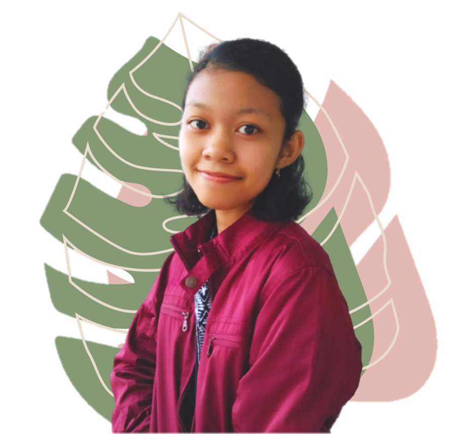
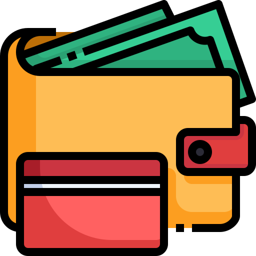

|  |
Tentang SayaPerkenalkan nama saya Ratna Sih Pinasti seorang mahasiswa semester 4 dengan NIM 205150200111026 jurusan Teknik Informatika yang sedang berkuliah di Universitas Brawijaya. Baru-baru ini saya tertarik untuk mendalami pemrograman di bidang web development khususnya front-end development. Pada mata kuliah pemrograman web ini saya ingin menambah pengetahuan saya mengenai basic-basic web development dan teknologi terbaru yang akan sangat berguna bagi saya di masa depan nanti. |
|  | |
| Berkuliah di Universitas Brawijaya | Freelancer |
|---|---|
|
Universitas Brawijaya yang merupakan salah satu dari 10 besar universitas terbaik di Indonesia menjadikannya begitu populer dan saingan untuk memasuki universitas ini juga cukup ketat. Beruntungnya saya kini berhasil menjadi bagian dan dapat berkuliah di Universitas Brawijaya di bidang/prodi yang saya ingini. |
Baru-baru ini saya mendapat kesempatan untuk menjadi pembuat bank soal untuk ujian SBMPTN para calon mahasiswa. Meskipun dengan bayaran yang tidak seberapa dan permintaan pembuatannyapun jarang, tetapi saya cukup senang dan bangga di waktu luang saya, saya bisa mulai menghasilkan uang sendiri. |
| Lulus Tepat Waktu | Bekerja Sebagai Front End Engineer | Meraih Financial Freedom |
|---|